Promedio General
—
Lectura
—
Matemática
—
Puntajes Registrados
—
EvoluciónLectura
EvoluciónMatemática
Análisis Comparativo por Curso
Selecciona un Establecimiento
Filtra un RBD arriba para ver el desglose por cursos.

Ingresa tu usuario y contraseña para visualizar los resultados DIA.
Herramienta de uso interno y formativo (Agencia de Calidad de la Educación): los resultados orientan las decisiones pedagógicas del equipo. No corresponden a una calificación de los niños ni a una evaluación de docentes, y las variaciones entre períodos comparan generaciones distintas.
Si tu establecimiento tiene resultados de Parvularia, arriba aparece el selector DIA general | DIA Parvularia. En "Mis vistas" (junto a "Limpiar Filtros") puedes guardar tus filtros favoritos con un nombre y volver a ellos con un clic; se guardan en este navegador. "Copiar enlace" genera un enlace a la vista actual: quien lo abra debe ingresar igualmente con su usuario y contraseña.
Resultados del DIA de Educación Parvularia. Es una evaluación voluntaria, de uso interno y formativo: orienta las decisiones pedagógicas del equipo y no califica a los niños ni a los docentes. Con el selector de arriba vuelves al visor DIA general.
Período, Nivel, Curso, Ámbito, Núcleo, Objetivo de Aprendizaje (O.A.) y Unidad Educativa se pueden combinar y seleccionar varios valores a la vez. "Limpiar Filtros" los resetea.
Período: cada ronda de evaluación (ej. 2025 Inicio, 2026 Inicio). El visor parte en el período más reciente; si eliges varios, los resultados se suman.
Administradores y establecimientos con NT1/NT2 que cargaron resultados del DIA Parvularia. Si tu establecimiento no tiene esos datos, el selector no aparece.
Año, Etapa, Nivel, Curso, Comuna y Unidad Educativa se pueden combinar y seleccionar varios valores a la vez. "Limpiar Filtros" los resetea todos. Los filtros activos aparecen como etiquetas bajo la barra — se pueden quitar una por una con clic.
Bajo cada promedio aparece la variación en puntos porcentuales (pp) de 2026 vs 2025, calculada en la última etapa que tiene datos en ambos años (se indica cuál). Muestra "—" si hay muy pocos datos o si el filtro no incluye ambos años.
Los promedios se ponderan por el número de cuestionarios de cada curso, así los cursos con más respuestas pesan más. Bajo el título del gráfico se indica el total de cuestionarios considerados.
Cuando un eje no parte en 0, es porque se ajustó al rango real de los datos para que se note mejor la variación — el valor exacto siempre está sobre el punto o la barra.